Bitesized Blackjack Case Study
A user interface design interview skill assessment, turned passion project. Playable on your phone or desktop.
Client
Personal Project
Skills
Figma, UI Design & Vibe Coding
Timeline
Ongoing (2025)
Project Overview
The Full
Picture
It's probably safe to say that most people know who Fruit of the Loom is and the business they’re in, but for those who don’t, here’s the quick context: Fruit of the Loom is a major player in the apparel industry, known for their wide range of clothing essentials. However, their online presence was outdated and not reflective of their brand’s evolution towards sustainability and innovation. The goal of this project was to completely redesign their website and migrate it to a new platform, improving site speed, user experience, and altering their current look at how they run their e-commerce business.
For me, this project was a great opportunity to learn new skills. As part of a two person design team colloborating with a larger group of developers and marketing team, I was responsible for leading the design and front-end development of the new site. This meant everything from design systems, wireframing and prototyping in Figma to coding responsive layouts and interactive components in React.js. It was a challenging but rewarding experience that allowed me to grow as both a designer and developer. Working closely with senior software engineers also gave me valuable insight into the technical considerations and constraints of web development, which informed my design decisions and helped me create a more cohesive final product.
Once we completed the project, seeing the actual real world impact of our work was fully rewarding. The new site not only looked great but also performed significantly better, with faster load times and a smoother user experience. Having built something to also make the jobs of the marketing teams easier by creating a more flexible design system and reusable components was an added bonus.
Project Details
-
Client
Fruit of the Loom
-
My Role
Designer & Front-End Developer
-
Timeline
5 Months (Mar – July 2023)
-
Technologies
Figma, HTML, CSS, JS, React.js
-
Live URL
Visit Website
The Challenge
The Problem
Worth Solving
The old Fruit of the Loom website was not only visually outdated but also suffered from slow load times and a clunky user experience. Users were frustrated at how long it took for pages to load, especially on mobile devices, which led to high bounce rates and lost sales. Additionally, the site’s information architecture was confusing, making it difficult for customers to find products and complete purchases. The challenge was to completely overhaul the website’s design and underlying codebase to create a faster, more intuitive shopping experience that also aligned with the brand’s new focus and e-commerce strategy.
"Checkout should be a breeze, not a barrier. Customers get frustrated easily and if you won't let them checkout, they'll just go somewhere else that will."
As Fruit of the Loom proper was shifting away from selling products direct to consumers, we needed a way to push our customers to our partners where they could buy our products, while still providing a compelling and branded experience on our own site. This meant rethinking the entire user flow and information architecture of the site, as well as implementing a new design that better reflected the brand’s evolution. Additionally, we had to work within the constraints of a tight timeline and rebuilding the entire codebase, adding an extra layer of complexity to the project.
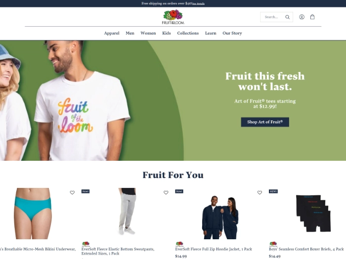
Key Constraints
-
Tight deadline with no room for extension
-
Brand new codebase & framework
-
Simultaneous project alongside 3 others
The Nitty Gritty
How We Got
There
The process, thinking & execution that turned our challenge into a solution.
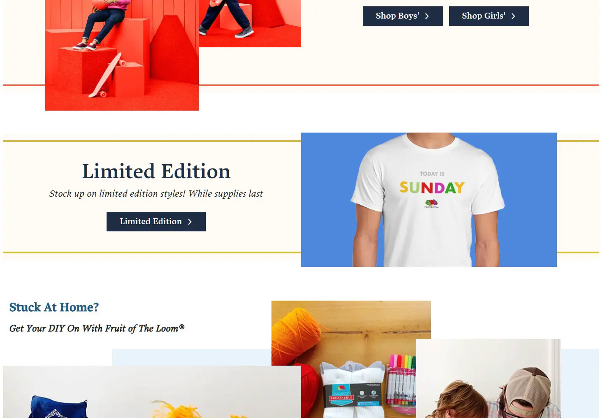
Discovery &
Strategy
To rebuild Fruit from the ground up, we first had to tear it down. The current site wasn't performing well as an e-commerce solution, so the ultimate goal was to remove that piece of the puzzle and focus more on promoting the individual products and drive customers to our partners to purchase their product.
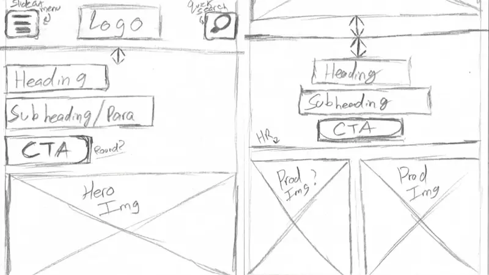
Design &
Prototyping
For this project we began the transition to Figma from Sketch. We created a design system and reusable components to help speed up the design process and make it easier for the marketing team to create new pages and content. Building these components with primitive and semantic variables made it easier to create new pages and content without having to worry about breaking the design system or creating inconsistencies across the site.
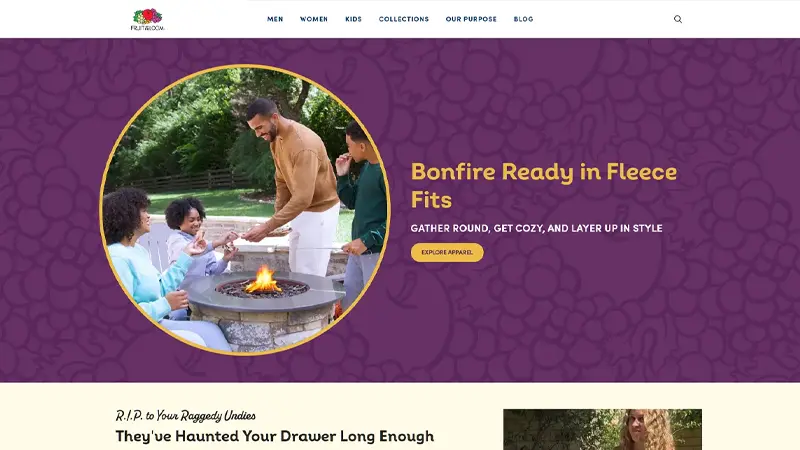
Development
& Build
For this project we built from the ground up using React.js. For my part, I was responsible for building the components we had created in Figma that would live in our CMS and allow our marketing team to pages and content on the fly. This site was built with a headless architecture which allowed us to build a more flexible site. We also implemented a number of performance optimizations and accessibility checks to ensure that the site was fast and accessible to all users.
The Work in Detail
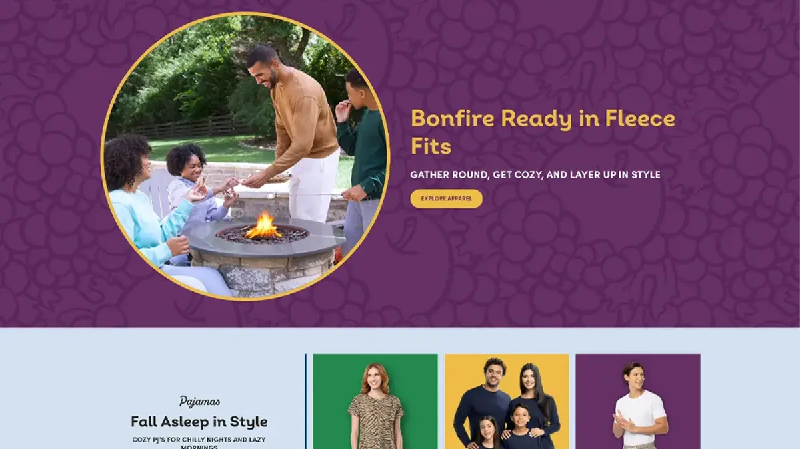
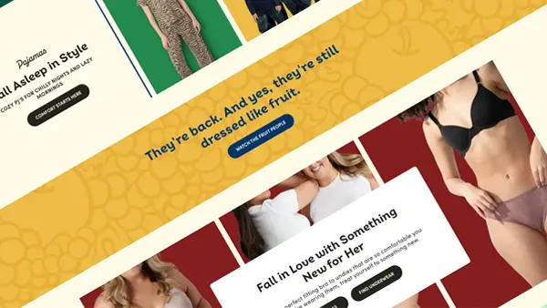
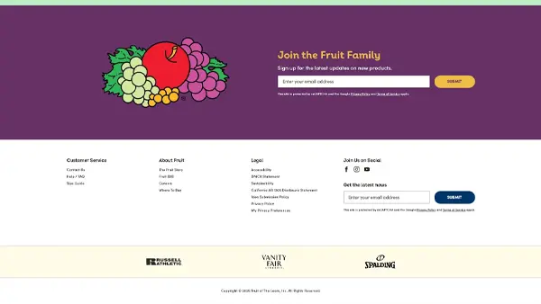
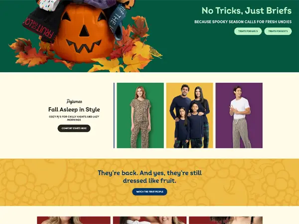
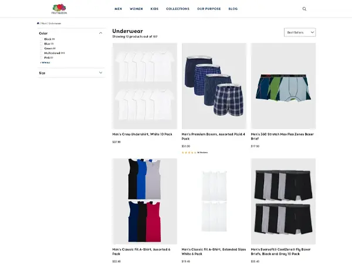
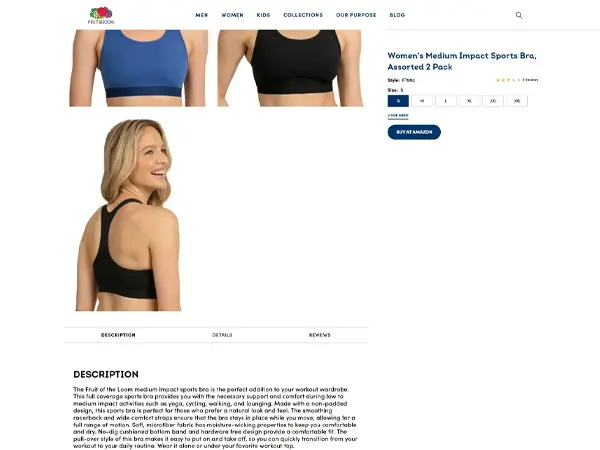
The Results
What We
Achieved
Numbers don't tell the whole story — but they're a great place to start. Here's what changed after launch.
Monthly Traffic Increase
Google PageSpeed Score
Page Load Time
We changed a core mechanic of Fruit of the Loom's e-commerce strategy. We took away the Direct to Consumer sales and instead pointed potential customers to our partners. Along with this we also transitioned our codebase and content efforts to help our marketing team have more freedoms when creating new campaigns.
Instead of relying on our designers and developers to help create banners and content for future launches, the components we built allowed them to create new pages and content on their own without having to worry about breaking anything.
"Planning campaigns and creating new content has never been easier. The new site is fast, flexible, and easy to use. We couldn't be happier with the results."
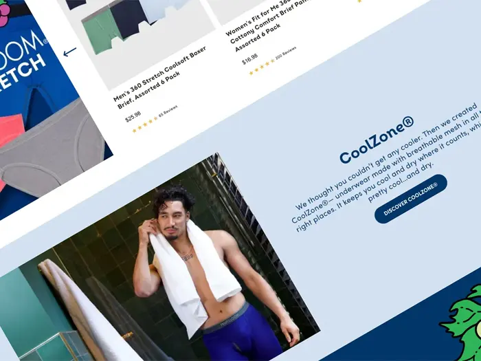
Reflection
What I
Learned
This project was a great learning opportunity and taught me a lot about my abilities as a designer, both my strengths and weaknesses.
Discovery First
Figuring out how people interacted with our site goes a long way into understand how the design plays a role in guiding that interaction.
Communication Is Key
I've always had a good relationship with our developers and this project really strengthed that. I leaned on them to help learn React while they leaned on me for design understanding.
Constraint Creates Clarity
During this project we had a strict timeline. Contracts with services were ending and we were not in a position to extend them. This forced us to make decisions and move forward without getting stuck in the weeds.
Always Iterate
Shipping the final product is never the end. We are constantly iterating and improving the site based on internal feedback and external user feedback and analytics. This is a never-ending process that will continue to evolve as the brand's needs and its customers evolve.
Like What You See?
Let's Build Something
Together
Have a project in mind? I'd love to hear about it. Every great collaboration starts with a good conversation.